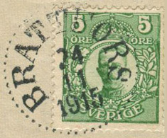
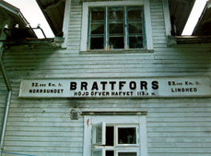

Något
om posten utmed
Dala-Ockelbo Norrsundets Järnväg och
Gävle Ockelbo Järnväg
inom Ockelbo kommun
utdrag från Erik Lindgrens Posthistorisk skriftserier
Ockelbo 1863
02 01 -  
På vår tänkta färd mot inlandet från Norrsundet kommer vi efter stationen i Åbydal förbi hållplatserna
Vittersjö och Östby, vilka inte förenades med poststationer. Nästa fulltständiga järnvägsstation var i den
Ockelbo. Där öppnades en poststation i samband med
att norra stambanan öppnades för allmän trafik på
delsträckan Storvik - Ockelbo den 1 november 1876.
Ansvaret för posten hamnade då på stationsinspektor G Hugo Westerdahl. Innan poststationen byttes ut mot
ett förvaltningspostkontor hann ansvaret för postservicen överföras på stationsskrivaren C Lindström
den 1 mars 1898.
Jag finner anledning att beröra poststationens bakgrund
även som lantpoststation. En poststation öppnades med
namnet Uggelbo så lång tid före kronobrevbäringsreformen,
att den kan ha sitt speciella intresse, särskilt som poststationerna inte fick några egna datumstämplar förrän i
slutet av 1868.
Sekreteraren Lövgren vid poststyrelsens ”avdelning för
tabellverket och skjutsärenden” (som poststyrelsens
blivande trafikavdelning kallades en tid) skrev den
28 februari 1862 ett ”vördsamt utlåtande” i anslutning
till att länsstyrelsen i Gävleborgs län hade avgett ett
yttrande den 5 januari 1861. Detta yttrande hade i och
för sig manats fram av poststyrelsen för att påskynda en
kartläggning av behovet av poststationer på landsbygden
av det slag som regeringen bemyndigat poststyrelsen att
inrätta genom ett beslut den 5 mars 1860.
Länsstyrelsen hade bland annat anfört ”att Årsunda och
Uggelbo socknar av Gästrikland såtillvida befinnas vanlottade
att någon post genom samma socknar ej framgår utan
avhämta Årsunda korrespondenter sina brev vid Främlingshem,
1 ¾ mil och Uggelbo socken sina från det på 2 mils avstånd
belägna Wifors bruk”.
Sekreteraren Lövgren skrev att avståndet från Uggelbo
församlings kyrka ”till postlinjen Gävle-Söderhamn visserligen
ej är större än 2 mil men då någon annan post icke genomlöper
ifrågavarande ort, därifrån väglängden är till Gävle 5 ½ och till
Söderhamn nära 8 mil samt till postanstalterna Bollnäs, Mora,
Gagnef och Falun än längre, samt det icke bör förbises att invid
denna sockenkyrka hava sitt läge tvenne stångjärnbruk och en
masugn utom de övriga dylika anläggningarna som i trakten
förefinnas, tvekar avdelningen ej uttrycka den åsikt att orten
äger grundande anspråk på att få sin sannolikt ej
obetydande korrespondens såmedelst underlättad, att någon postinrättning
därstädes åvägabringas och hemställer avdelningen därför om
ej Kungl. Styrelsen skulle finna skäligt besluta om öppnandet av
en poststation utav det nya slaget vid Uggelbo kyrka i Gästrikland
samt för sådant ändamål hos Kungl. Maj:t anhålla om nådigt
bemyndigande att få inrätta post 2 gånger i veckan fram och
åter mellan Uggelbo och Wij posthemman eller Bergs gästgivaregård
i Hamrånge socken, för att däremellan och Gävle fortgå förenad
med Stockholm – Haparanda – posten. Den för postverket
härigenom uppkommande kostnad, uppgående i postföringsutgift
till omkring 375 rdr rmt, jämte poststationsföreståndarens arvode,
torde kunna anses bliva tillstörre delen betäckt genom det porto,
som i följd av poststationens tillkomst bör i postkassan inflyta”.
Vid poststyrelsens behandling av Lövgrens utlåtande, troligen
med denna själv som föredragande, beslöts att poststationen
i Uggelbo skulle inrättas den 1 februari 1863, sedan väl
regeringen medgett att en ny postgång fick inrättas mellan
Gävle och Söderhamn. Samtidigt medgav regeringen några
andra post gångar samt nya poststationer i Älvdalen,
i Salbohed, i Sund och i Jämshög
(diarienummer Klb 1862:1945).
När beslutet om en poststation i Uggelbo blev känt, anmälde
sig musikdirektören och skolläraren Johan Fredrik
Lagergren som sökande till befattningen. Han fick goda vitsord och antogs.
Under hans korta tid som poststationsföreståndare avgjordes
ett ärende som kan ha visst intresse för ortstämpelsamlande
filatelister.
Lagergren hade via postinspektionen i Gävle hemställt om att
poststationen i Uggelbo skulle förses med makuleringsstämpel,
”Helst makulering med bläck av frimärken å alla de brev, som
från poststationen ingår till det kontor, varunder stationen lyder,
dels krävde mycket tid, dels även ofta ledde till att breven
nedisuddades”.
Poststyrelsen svarade emellertid den 17 september
1863 att man ”så mycket mindre f n funnit någon sådan apparat
vara för poststationen erforderlig, som ingalunda enligt stationens
förmenande, vilket även Postinspektionen synes biträda, böra
genom poststationen makuleras frimärkena å sådana, förut
nämnda brev, som expedieras till den postanstalt, varunder
stationen lyder, utan gäller det i stationsföreståndarens
skrivelse åberopade stadgandet i cirkulär nr 70
av den 27 november 1862 angående en del frimärkens
överkorsande med bläck, enligt ordalydelsen ensamt sådana
brev, som växlas direkt mellan två poststationer.
Å alla övriga,
från en poststation inkommande brev skola jämlikt föreskriften
i instruktionen för poststationsföreståndare av den 4 oktober
1860, § 11 mom 2, frimärkena makuleras först å det postkontor
eller den postexpedition, med vilken stationen direkt utväxlar
postförsändelser”.
Lagergren fick redan samma år som han tillträtt, lämna över sin
befattning till stationsmästaren August Wåhlberg. När denne
begärde sitt entledigande fr o m den 15 augusti 1874, återtog
Johan Fredrik Lagergren befattningen, blott för att uppleva
poststationens indragning med oktober månads utgång 1876.
Hans årsarvode på 300 kr hade genom poststyrelsens beslut
den 24 mars 1876 hunnit höjas till 500 kronor men det kunde
han inte få full glädje av.
Den 1 november 1876
öppnades i
stället, som nämnts tidigare, vid den fortsatta utbyggda norra
stambananen en förenad post- och järnvägsstation med namnet Ockelbo.
Stationsinspektor G Hugo Westerdahls efterträdare som postansvarig,
stationsskrivaren C Lindström, fick inte svinga postens datumstämpel
så länge.
Ett kungligt brev hade medgett poststyrelsen att byta ut poststationen
mot ett förvaltningspostkontor den 1 oktober 1898. Därmed hade det
lokala samarbetet mellan post och järnväg upphört i vad gäller ansiktet
ut mot kunderna. Såsom postmästare vid en järnvägsknutpunkt fick
postmästaren Carl Anders Alfred Ljunggren (1898-1902) och hans
efterträdare ändå anledning att ägna en del av arbetstiden år
kontakter med järnvägspersonal.
Genom att Ockelbo blev förvaltningspostkontor blev det åtskilliga
förändringar av postområdena. Från Storviks dåvarande postområde
överfördes sålunda den 1 oktober 1989 till Ockelbo nya postområden
flera
poststationer. Postmästare Ljungberg fick inledningsvis under sin
förvaltning poststationerna i Bergby, Brattfors
Enviken, Jädraås, Katrinebergs kapell, Linghed, Norrsundet, Svabensverk, Svartnäs,
Vintjärn,
Åbydal och Åmots bruk samt lantbrevbäringslinjen Svabensverk – Bingsjö.
Karaktären av förvaltningspostkontor varade i Ockelbo från och med
november 1876 till och med september 1952. Därefter blev det
degradering
till postexpedition utan underlydande poststationer eller
lantbrevbäringslinjer. Med ny terminologi finns det åter ett postkontor
i
Ockelbo, där chefen ansvarar för service till drygt 3200 hushåll
inklusive
dem med postadress Åmotsbruk, Lingbo och Jädraås.
Brattfors 1897 11 01 - 1925
06 30
Med mars månads utgång 1879 drogs den värmländska poststationen
med namnet
Brattfors in (posthistorisk skrift nr 250). Namnet var sålunda
”ledigt”
för användning efter detta datum och kunde utan komplikationer
tilläggas
den poststation som med tågstarten öppnades i Brattfors strax
söder om
Ockelbo.
Innan ”vårt tåg” kommer dit har vi passerat hållplatsen
vid Wij
bruk, där något poststation inte öppnades. Det var inte möjligt för
järnvägspersonalen att ha hand om postgöromålen i Brattfors. Det blev
därför inte någon poststation förenad med järnvägen, utan en s.k
lantpoststation, som öppnades där den 1 november 1897.
Med ett årsarvode på 180 kr antogs läraren Lars Erik Berglund som föreståndare. Detta
höjdes
vid 1899 års utgång till 300 kr. Det visade sig snart nog att poststationen i Brattfors var olönsam.
Nedläggning av Brattfors bruk minskade postens omsättning och bidrag
till
poststationens indragning ett par år senare, med utgången av första
halvåret 1925.
Jädraås 1885 08 01- 1968
05 31
Det fanns redan en poststation i Jädraås, när järnvägen uppläts för
allmän
trafik. Man kan säga att den utgjorde inledningen för samarbete
mellan
post och järnväg, men det var andra skäl som bidrag till att den
bedömdes
som behövlig.
Strävan att civilstatens postgång skulle fungera bra visade
sig ofta vara en starkt bidragande orsak till att poststationer
blev
inrättade länge efter det att postverket formellt hade tagit över
ansvaret
för kronobrevbäringen under loppet av åren 1874 – 1876.
Ett exempel är sålunda poststationen i Jädraås.
Disponenten Joh Fr Krook i
Ockelbo begärde i mars 1884 i ett brev till poststyrelsen, att en
poststation skulle inrättas vid den ena slutpunkten av Vintjärn - Jädraås
järnväg. I september samma år blev delsträckan Lilla Björnmossen - Jädraås
upplåten för allmän godstrafik. Disponenten Krook önskade genom sitt
brev
till poststyrelsen också att kärrpostföring skulle inrättas med två
turer
i veckan fram och åter mellan Jädraås och Ockelbo järnvägsstationer.
Postinspektören avstyrkte framställningen på grund av att den skulle
medföra en kostnadsökning för postverket på 600 kronor om året.
Han tog
emellertid hänsyn till svårigheten för den fjärdingsman som
bodde i
trakten av Jädraås att utväxla tjänsteförsändelser och bad
att få
undersöka om inte ”till underlättande ej mindre härav än ock för
befordran
av övriga försändelser till och från Jädraås, lantbrevbäring
lämpligen
kunde anordnas mellan Jädraås och Ockelbo.
Landskansliet i Gävle vitsordade behovet av en poststation i Jädraås,
men
var medveten om att en sådan skulle medföra höga kostnader.
Eftersom
lantbrevbäring nöjaktigt skulle kunna tillfredsställa
kronobetjäningens
behov, ansåg landskansliet att sökandena borde få bifall till sin
framställning endast om de ”i vederbörlig ordning tillförbinda sig att
ansvara för den kostnad som genom en dylik anordning kan komma att
tillskyndas Kungl. Postverket utöver den beräknade postuppbörden vid den
ifrågasatta poststationer”.
Det visade sig att de som skulle ha fördel av
en poststation i Jädraås inte kände ”sig hugade lämna något enskilt
bidrag”. Bruksinspektorn Henrik Krook i Jädraås erbjöd sig att sköta
göromålen vid en poststation i Jädraås mot ett årsarvode av 120 kronor, om
poststyrelsen ändå ”skulle finna sig manad föranstalta om poststation
försöksvis för ett år till att börja med”.
Postföringsfrågan visade sig kunna bli löst på ett billigt sätt genom att
torparen Anders Näslund under Ockelbo prästgård tecknade ett kontrakt om
postföring två gånger i veckan mellan Ockelbo och Jädraås mot en
ersättning av 3:50 per tur fram och åter. Detta i förening med
fjärdingsmannens behov av en poststation var tillräckligt för
poststyrelsens beslut att låta inrätta en poststation i Jädraås från den 1
augusti 1885.
Ny såsom tf föreståndare för poststationen i Jädraås blev från den 27
februari 1895 trafikchefen J A Westerlund, på ordinarie stat från den 1
juli 1895 med 180 kr i årsarvode. Detta höjdes till 360 kr 1908 och
dessutom tillkom då en särskild biträdesersättning med 300 kr. Då hade
trafiken på järnvägen i sin helhet varit igång drygt 10 år.
När
postföringen började på järnvägen den 1 november 1897, behövdes inte
längre postföringen på landsvägen mellan Ockelbo och Jädraås. I
kontraktet med Anders Näslund fanns en klausul som gjorde att det upphörde
vid tågstarten.
Poststationen i Jädraås var bärkraftig nog att leva kvar till modern tid.
Men den fyllde inte efterkrigstidens hårdnande krav på hushållsunderlaget
och ersattes med lantbrevbäring med juni månads ingång 1968. Fram till och
med juni 1976 kompletterades lantbrevbäraren med ett postombud för
utväxling av post med postexpeditionen i Ockelbo.
Gävle – Ockelbo järnväg
Kolforsen 1887 01 01 – 1921
12 31
Poststationen öppnades vid 1887 års ingång i stationshuset med
stationsmästaren Per Adolf Hellström som ansvarig. Enligt beslut den 28
oktober 1886 skulle hans årsarvode för postsysslan uppgå till 120 kr.
Stagnation präglade poströrelsen och högre arvode är så nådde han aldrig.
I juli 1921 fick poststyrelsen för behandling ett förslag om
poststationens indragning
(diarienummer 1 b 923/1921). Detta
förslag kom att förverkligas med 1921 års utgång under en tidsperiod då
trots höga omkostnader förvånansvärt få poststationer blev indragna.